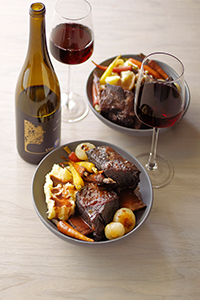

A hearty Petite Sirah, this shows class, elegance and power. It’s dry and softly tannic, sprinkled with black pepper. Vintner Ligeia Polidora, proprietor of Trueheart Vineyard in Sonoma, suggests pairing it with hearty flavors, like grilled and roasted meats, bitter vegetables, strong cheeses and anything with lots of garlic.
First, Petite Sirah is anything but little. It’s a deep, dark bruiser of a wine—a stain-your-teeth-purple kind of wine. Petite Sirah is no cocktail wine—it needs hearty food alongside. Pull out a deeply flavored dish, like these Spiced Short Ribs, with enough protein and fat to coat those tannins, and you’ll taste what all the excitement is about.
